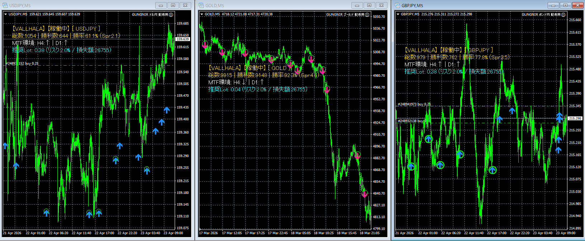
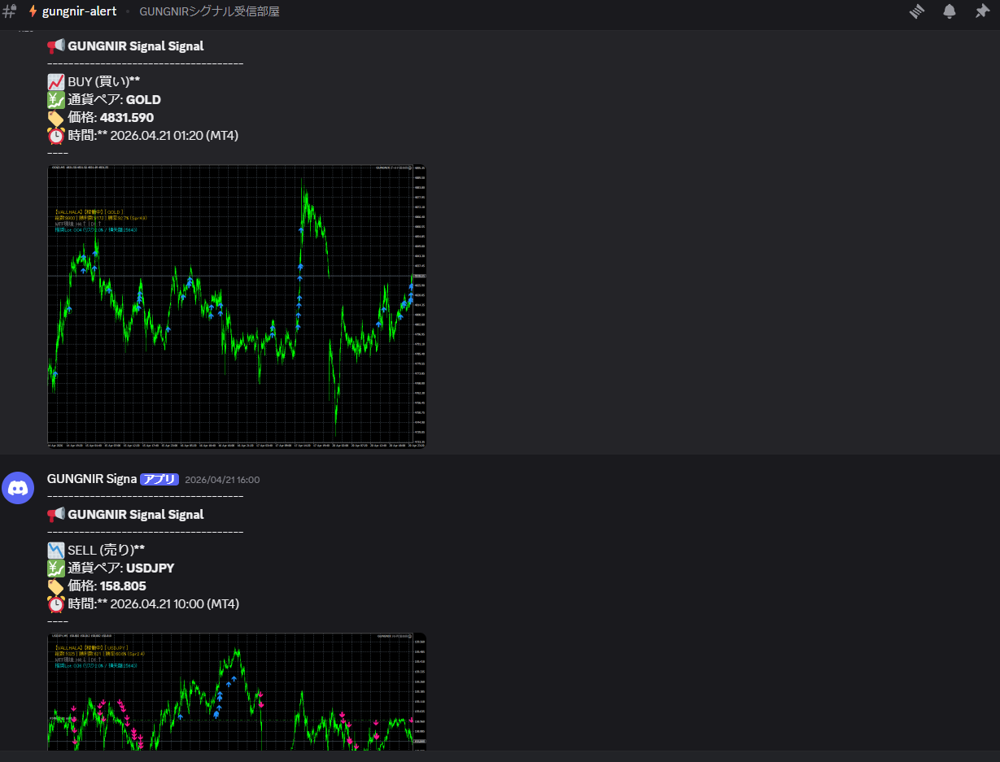
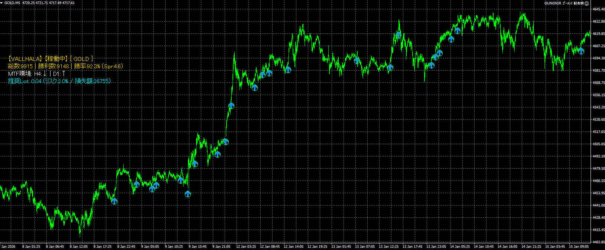

PCへの張り付きは、もう終わる。
高度なマルチタイムフレーム分析 × ボラティリティ追従ロジック。
プロの環境認識と資金管理を完全システム化し、
「チャート画像付き」であなたのDiscordへリアルタイム配信。
GUNGNIRは、これらの問題を「最先端のコード設計」ですべて解決します。

GUNGNIRは、単なるインジケーターの組み合わせではありません。プロトレーダーの脳内で行われている「環境認識」をコードに落とし込みました。

GUNGNIR最大の革新が「通知システム」です。
サインが確定した瞬間、システムが自動でチャートのスクリーンショットを撮影。「通貨ペア・方向・価格・時間」と共に、実際のチャート画像をあなたのDiscordへ直接送信します。
外出先でも、仕事中でも。スマホに届いた画像を見て、優位性を目で確認してからエントリー判断が可能です。

FXで生き残るために最も重要な「資金管理（ロット計算）」を完全自動化。
あなたの口座残高と許容リスク（例：資金の2%）に基づき、「次のトレードの適正ロット数」をチャート左上に常に表示します。計算の手間なく、常にプロと同じ堅実な資金管理でトレードが可能です。
勝つこと以上に「負けないこと」に特化。GUNGNIRには、システムが自動で危険を回避する防衛機能が組み込まれています。
早朝やボラティリティ低下時など、スプレッド（手数料）が広がりすぎている時はエントリーサインを自動ブロックします。
雇用統計など、重要な経済指標発表の時間を事前設定し、その前後30分はシステムを自動停止させ不慮の事故を防ぎます。
流動性の低い時間帯を避け、指定した「優位性の高い時間帯」のみ稼働させることが可能です。
不正利用を防ぐ強固なWeb認証システムを搭載。正規ユーザーだけが最高の環境を安全に利用できます。
GUNGNIRは「どの通貨でも使える汎用ツール」ではありません。
ボラティリティが高く、トレンドが出やすい最強の3銘柄に絞り、内部ロジック（TP/SL幅など）を専用チューニングしています。
爆発的なトレンドとボラティリティを狙い撃つ黄金の槍。
「殺人通貨」の異名を持つ激しい値動きを、精緻なロジックで制圧。
世界で最も取引され、テクニカルが効きやすい王道の通貨ペア。
※各通貨ペアごとに、内部の利確・損切ロジックが最適化されています。